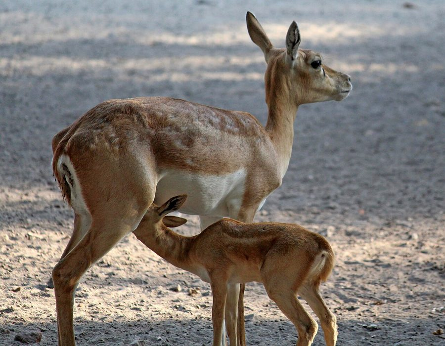

काला हिरणBlackbuck
Antilope cervicapra · Bovidae · MAM-0043

- Scientific name वैज्ञानिक नाम
- Antilope cervicapra (Linnaeus, 1758)
- Family कुल
- Bovidae
- Hindi हिंदी
- काला हिरण
- Local names स्थानीय नाम
- blackbuck, kala hiran, krishnamrig
- Status here यहाँ की स्थिति
- native
- Movement आवागमन
- Resident, here all year
- Known from कहाँ दर्ज
- Others have published records from the wider Awadh–Purvanchal plain, none yet from Basti–Ayodhya अवध–पूर्वांचल से दूसरों के प्रकाशित अभिलेख, बस्ती–अयोध्या से अभी नहीं
- IUCN IUCN
- LC
- Review समीक्षा
- not yet reviewed
When to look कब देखें
Present all year. साल भर मौजूद।
Tell it apart from इनसे अलग पहचानें
काला हिरण / Blackbuck
Antilope cervicapra (Linnaeus, 1758) — Bovidae
काला हिरण — खुले घास के मैदानों और खुले खेतों में रहने वाला भारतीय हरिण। वयस्क नर का रंग गहरा काला-भूरा और निचला शरीर सफेद होता है, और उसके सिर पर पेचदार सींग होते हैं। मादा और छोटे बच्चे पीले-भूरे रंग के होते हैं। ब्लैनफ़ोर्ड (1891) के अनुसार यह खुले मैदानों में 10 से 30 या अधिक के झुंडों में पाया जाता है। वन्यजीव (संरक्षण) अधिनियम के तहत यह एक संरक्षित प्रजाति है।
Quick Identification त्वरित पहचान
| Feature | Description |
|---|---|
| Build & Size | Slender medium antelope; height at shoulder about 32 inches, head and body 4 feet (Blanford 1891) |
| Male Horns | Long, diverging spiralled horns, usually 16 to 20 inches long in adults (Blanford 1891) |
| Male Pelage | Upperparts blackish brown to deep black; nape brownish rufous; white eye-rings (Blanford 1891) |
| Female Pelage | Yellowish-fawn above and on limb exteriors, with a pale lateral band; hornless (Blanford 1891) |
| Underparts | Pure white below, sharply divided from dark or fawn upper body (Blanford 1891) |
Field tip: Look for an antelope of open plains where mature males show dark blackish-brown upperparts sharply separated from white lower parts and long spiralled horns. Does and young are yellowish-fawn with a distinct pale lateral band (Blanford 1891, p. 522).
हिंदी:
नर काला हिरन अपने घुमावदार सींगों और गहरे काले-भूरे शरीर से आसानी से पहचाना जाता है, जबकि मादा सींग-रहित और बादामी-पीले रंग की होती है।
Morphology आकारिकी
Measurements as given by Blanford (1891, p. 522) for the Indian Antelope (Antilope cervicapra):
| Measurement | Range |
|---|---|
| Height at shoulder | about 32 inches (Blanford 1891) |
| Length of head and body | 4 feet (Blanford 1891) |
| Tail length | 7 inches (Blanford 1891) |
| Horn length | usually 16 to 20 inches (Blanford 1891) |
| Weight | about 90 lb (Blanford 1891) |
Blanford (1891, p. 522) described the adult coloration: "Colour of does and young bucks yellowish-fawn above and on the outside of the limbs, lower parts white, the two colours sharply divided; a distinct pale lateral band a little above the line of division. Old bucks are blackish brown above, becoming almost black in very old animals, except on the nape, which remains brownish rufous, whilst the sides and front of the neck, and also the face except a white area round each eye, are blackish brown. The pale lateral band disappears in old males."
The spiral horns in males have turns varying from less than 3 to 5 (Blanford 1891, p. 522). The vernacular line in Blanford (1891, p. 521) is imperfectly scanned in old prints: "Haran, Harna ... Harni ... Kalwit ... Mrig, H."
Vocalisations
Not available in consulted sources.
हिंदी:
ब्लैनफ़ोर्ड (1891) के अनुसार कंधे पर इसकी ऊंचाई लगभग 32 इंच और सिर-शरीर की लंबाई 4 फीट होती है। वयस्क नरों में 16 से 20 इंच लंबे घुमावदार सींग होते हैं। मादाएं सींग-रहित और पीले-भूरे रंग की होती हैं। परामर्शित स्रोतों में आवाजों का कोई विवरण उपलब्ध नहीं है।
Behaviour & Ecology व्यवहार और पारिस्थितिकी
Blanford (1891, p. 522) recorded the habits: "Open plains of short grass, level or undulating, and cultivated land are the usual haunts of the Indian antelope, which is generally found in herds ; these are sometimes extremely numerous, and comprise occasionally several thousand animals of both sexes and all ages ; but more often small herds of does, generally 10 to 30 in number, but sometimes as many as 50, are met with, attended by a single black buck, which does not always accompany the females."
Blanford (1891, p. 523) added: "The Indian antelope, like the South-African springbok (Gazella euchore), has the habit of occasionally springing into the air, all the members of a herd generally bounding, one after the other. This is done, as Sir W. Elliot has shown, before they are much frightened, and when the herd is first moving off. When at speed the gallop is like that of any other animal."
हिंदी:
ब्लैनफ़ोर्ड (1891) के अनुसार यह खुले घास के मैदानों और खेतों में 10 से 30 या अधिक के झुंड में रहता है। किसी खतरे के समय यह हवा में ऊंची छलांगें लगाता है और फिर तेज गति से दौड़ता है।
Life Cycle / Phenology जीवन चक्र
Not available in consulted sources.
हिंदी:
परामर्शित स्रोतों में इसके जीवन चक्र और प्रजनन काल का कोई विशिष्ट विवरण उपलब्ध नहीं है।
Host Plants or Prey आहार
Not available in consulted sources.
हिंदी:
परामर्शित ऐतिहासिक स्रोतों में आहार का विशिष्ट विवरण उपलब्ध नहीं है।
Predators / Natural Enemies शत्रु
Not available in consulted sources.
हिंदी:
परामर्शित स्रोतों में प्राकृतिक शत्रुओं का कोई विवरण उपलब्ध नहीं है।
Agricultural / Human Relevance कृषि प्रासंगिकता
Conservation legal status: Protected under the Wildlife (Protection) Act, 1972.
हिंदी:
यह वन्यजीव (संरक्षण) अधिनियम, 1972 के तहत पूरी तरह से संरक्षित है।
Expected Locally स्थानीय रूप से अपेक्षित
Not a field record. Written from published accounts for eastern Uttar Pradesh. No confirmed local sighting yet — if you have seen it, that is what the atlas needs.
अभी तक स्थानीय पुष्टि नहीं। यह विवरण प्रकाशित स्रोतों से है, किसी अवलोकन से नहीं।
GBIF holds published records from the wider plain: one Indian record, a photograph from Katarniaghat, Bahraich, 22 September 2016 (iNaturalist 295046898). GBIF also puts two 2026 records in Bahraich, but iNaturalist places them in Bheri, Nepal, with blurred coordinates. A photograph with place and date would constitute a first record for the atlas.
हिंदी:
कतरनियाघाट (बहराइच) से 22 सितंबर 2016 का एक फोटोग्राफिक रिकॉर्ड (iNaturalist 295046898) मौजूद है। जीबीआईएफ बहराइच में दो 2026 के रिकॉर्ड दिखाता है, लेकिन iNaturalist उन्हें भेरी (नेपाल) में रखता है। बस्ती या अयोध्या से कोई रिकॉर्ड नहीं है। स्थान और तारीख के साथ एक फोटो एटलस के लिए पहला रिकॉर्ड होगी।
Distribution वितरण
Global range: Native to the Indian subcontinent; Blanford (1891, p. 522) noted: "India from the base of the Himalayas to the neighbourhood of Cape Comorin... and from the Punjab to Lower Assam, in open plains, not in Ceylon nor east of the Bay of Bengal. Not found on hills nor in thickly wooded tracts".
In India: Blanford (1891, p. 522) recorded: "Antelopes are most abundant in the North-west Provinces, Rajputana, and parts of the Deccan, but are locally distributed and keep to particular tracts."
In Uttar Pradesh: One Indian record: a photograph from Katarniaghat, Bahraich, 22 September 2016 (iNaturalist 295046898). GBIF also puts two 2026 records in Bahraich, but iNaturalist places them in Bheri, Nepal, with blurred coordinates.
In Basti district / eastern UP: GBIF holds no record from Basti or Ayodhya.
हिंदी:
ब्लैनफ़ोर्ड (1891) के अनुसार यह हिमालय की तलहटी से लेकर कन्याकुमारी तक और पंजाब से असम तक खुले मैदानों में पाया जाता था। उत्तर प्रदेश में कतरनियाघाट से एक रिकॉर्ड है, जबकि बस्ती और अयोध्या से कोई रिकॉर्ड नहीं है।
Research Questions शोध प्रश्न
- What published historical accounts document the former presence of Antilope cervicapra in the central Gangetic plains of Uttar Pradesh? / उत्तर प्रदेश के मध्य गंगा के मैदानी इलाकों में काले हिरण की पूर्व उपस्थिति को कौन से प्रकाशित ऐतिहासिक विवरण प्रमाणित करते हैं?
- What open grassland corridors historically connected populations between the Terai arc and central India? / कौन से खुले घास के गलियारे ऐतिहासिक रूप से तराई और मध्य भारत की आबादी को जोड़ते थे?
- How did historical habitat conversion of alluvial grasslands to agriculture impact herd sizes reported by nineteenth-century naturalists?
- What ecological characteristics distinguish historical blackbuck sites from nilgai-dominated scrub in the region?
- What field survey methods can best verify whether transient individuals ever reach the southern floodplains of eastern UP?
हिंदी:
1. उत्तर प्रदेश के मध्य गंगा के मैदानी इलाकों में काले हिरण की पूर्व उपस्थिति को कौन से प्रकाशित ऐतिहासिक विवरण प्रमाणित करते हैं?
2. कौन से खुले घास के गलियारे ऐतिहासिक रूप से तराई और मध्य भारत की आबादी को जोड़ते थे?
Similar Species मिलती-जुलती प्रजातियाँ
| Species | How to tell apart | हिंदी | |
|---|---|---|---|
| [[nilgai | Nilgai]] (Boselaphus tragocamelus) | Much larger horse-like build; greyish-blue coat in bulls; short unspiralled horns | नीलगाय |
| [[four_horned_antelope | Four-horned Antelope]] (Tetracerus quadricornis) | Smaller size; dull rufous-brown coat; males possess four short, smooth horns | चौसिंगा |
| [[spotted_deer | Spotted Deer]] (Axis axis) | Bright rufous-fawn coat covered in permanent white spots; branched antlers in males | चित्रा |
Field rule: Mature male Blackbuck are instantly identified by long spiralled horns and striking black-and-white pelage, whereas does are slender, unhorned, and yellowish-fawn (Blanford 1891, p. 522).
Taxonomy & Classification वर्गीकरण
Original description. Described by Carl Linnaeus in 1758 in Systema Naturae (10th ed., vol. 1, p. 69), under the basionym Capra cervicapra, with type locality designated as "Asia" (India).
Subspecies. Not available in consulted sources.
Family and order placement. Order Artiodactyla, family Bovidae, subfamily Antilopinae, genus Antilope.
Phylogenetic notes. Not available in consulted sources.
IUCN status rationale. Evaluated as Least Concern (LC) on the IUCN Red List (IUCN SSC Antelope Specialist Group 2017).
हिंदी:
कार्ल लिनिअस ने 1758 में इसका वर्णन किया था। यह बोविडे परिवार का सदस्य है और आईयूसीएन रेड लिस्ट में संकट-मुक्त (LC) श्रेणी में दर्ज है।
Photo Gallery फोटो गैलरी
No photos yet — add field photos to media/species/blackbuck/ and run node scripts/sync_photos.js.
Photos needed आवश्यक फोटो
- [ ] Adult male showing spiralled horns and black saddle (सींग और काले रंग वाला वयस्क नर)
- [ ] Female with fawn in grassland habitat (घास में बच्चे के साथ मादा)
References संदर्भ
- Linnaeus, C. (1758). Systema Naturae per Regna Tria Naturae. 10th ed. Vol. 1. Laurentii Salvii, Holmiae, p. 69 (as Capra cervicapra).
- Blanford, W. T. (1891). The Fauna of British India, Including Ceylon and Burma. Mammalia. Part II. Taylor & Francis, London, pp. 521–524 (as Antilope cervicapra).
- Prater, S. H. (1971). The Book of Indian Animals. 3rd ed. Bombay Natural History Society, Bombay.
- Menon, V. (2014). Indian Mammals: A Field Guide. Hachette India, Gurgaon.
- IUCN SSC Antelope Specialist Group (2017). Antilope cervicapra. The IUCN Red List of Threatened Species 2017: e.T1681A50181949. doi:10.2305/IUCN.UK.2017-2.RLTS.T1681A50181949.en
- GBIF Occurrence Data — Antilope cervicapra, India (2025).
Source file: species/fauna/mammals/blackbuck.md